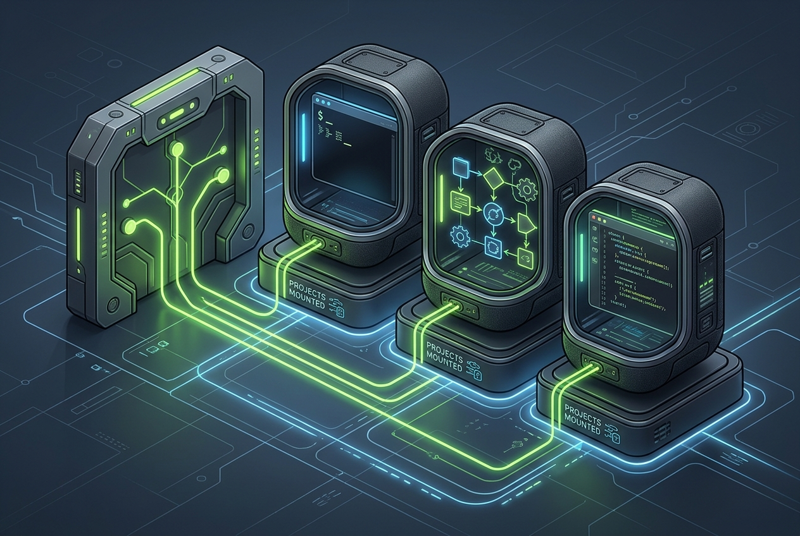

Choose a validated profile
Select an approved Nemotron profile for the available hardware. Validation considers the inference backend, quantisation, context window and concurrent workloads.
OPEN SOURCE · SELF-HOSTED
Deploy agents, local models and approved tools into isolated sandboxes.
React Admin runs locally in a web container. A separate FastAPI container exposes a versioned control API. Gateway, OpenShell, model sandboxes and agent sandboxes stay separate.

Planned v1 supports validated Nemotron profiles on suitable local GPU hardware. Each model runs in its own sandbox with start, stop, health, logs and gateway policy.
Support depends on validated inference backend, quantisation, context length and concurrent workload.
Choose an agent runtime, tools, approved MCP capabilities, project mounts and a reusable policy before deployment.

The planned editor creates, validates, versions, diffs, assigns and rolls back policies for mounts, tools, DNS, TLS, proxy routing and allowed destinations.

The working generator renders a seed bundle and Ubuntu command. Planned targets include bare metal, Proxmox, VM, WSL and local GPU workstations. Secrets are added after first boot.
PLANNED V1 · MODEL DEPLOYMENT
Select an approved Nemotron profile for the available hardware. Validation considers the inference backend, quantisation, context window and concurrent workloads.
Nestbox creates a dedicated model runtime with a persistent cache, health checks and an explicit route through the gateway.
Start, stop or restart the service, inspect streamed logs and approve which sandboxes may call the model.
DGX Spark-class systems with up to 128 GB unified memory are a planned validation target. A model profile is supported only after repeatable testing on its target configuration.
PLANNED · TEMPLATES AND TOOLS
Development, coding agent, research, local-model client and custom templates keep deployments understandable.
Choose Git, approved GitHub access, build tools, project CLIs and other approved packages when the sandbox is created.
Approved MCP tools are selected per sandbox and remain subject to OpenShell, gateway and policy controls.
Compatibility examples include OpenShell, NemoClaw, OpenClaw, Hermes, OpenCode, OpenChamber, Claude Code, OpenAI-compatible runtimes and custom agents. Names are examples only; no partnership or endorsement is implied.
PLANNED · PROJECT ACCESS
Operators will attach, detach and reassign project volumes with read-only or read/write grants. An unmounted project remains invisible to the sandbox; every change is shown in the audit history.
PLANNED · POLICY AND EGRESS
Create, validate, version, diff, stage, assign, revoke and roll back policies for mounts, tools, DNS, TLS, proxy routing and destinations.
Filter events by sandbox and see destination, allow or block decision, route, latency and correlation ID.
Planned forwarding redacts sensitive fields, uses secure transport and buffers events during an unavailable destination.
The gateway can offer an operator-controlled observation path per policy. The exact proxy approach is still under evaluation; TLS decryption is not enabled by default.
SECURITY PRINCIPLE
Network setup may be preseeded: hostname, DHCP or static addressing, routes, DNS/search domains, NTP, trusted CA and HTTP(S) proxy. API keys are not embedded in ISO images, seed bundles or ordinary sandbox files. Planned secret delivery is scoped, short-lived and auditable after first boot.